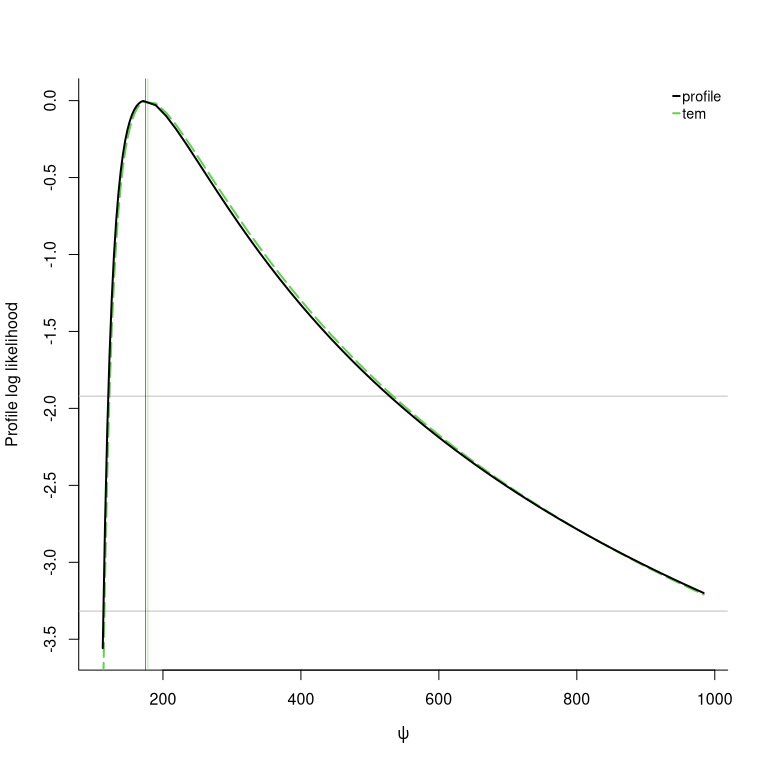

Likelihood based inference for univariate extremes
Léo Belzile
2022-04-12
Source:vignettes/01-univariate.Rmd
01-univariate.RmdThe mev package provides gradient-based optimization
routines for fitting univariate extreme value models, either block
maxima or threshold exceedances, using one of four likelihoods: that of
the generalized extreme value distribution, the generalized Pareto
distribution, and the inhomogeneous Poisson point process and the \(r\)-largest order statistics.
Relative to other packages such as evd or
ismev, the package functions include analytic expressions
for the score and observed informations, with careful interpolation when
\(\xi \approx 0\). However,
mev does not handle generalized linear or generalized
additive models for the parameters, to avoid having as many inequality
constraints in the optimization as there are observations times the
number of covariates.
Basic theory
Let \(\ell(\boldsymbol{y}; \boldsymbol{\theta})\) denotes the log-likelihood of an \(n\) sample with a \(p\)-dimensional parameter \(\boldsymbol{\theta}\). The score vector is \(U(\boldsymbol{\theta})=\partial \ell / \partial \boldsymbol{\theta}\), while the Fisher information is \(i(\boldsymbol{\theta})=\mathrm{E}\{U(\boldsymbol{\theta})U(\boldsymbol{\theta})^\top\}\). Under regularity conditions, we also have \(i(\boldsymbol{\theta}) = - \mathrm{E}(\partial^2 \ell / \partial \boldsymbol{\theta}\partial \boldsymbol{\theta}^\top)\). The observed information is the negative Hessian \(-\partial^2 \ell / \partial \boldsymbol{\theta}\partial \boldsymbol{\theta}^\top\), evaluated at the maximum likelihood estimator \(\hat{\boldsymbol{\theta}}\).
By definition, the maximum likelihood estimator solves the score equation, i.e. \(U(\hat{\boldsymbol{\theta}})=\boldsymbol{0}_p\). If the maximum likelihood estimator is not available in closed-form, its solution is found numerically and this property can be used to verify that the optimization routine has converged or for gradient-based maximization algorithms.
Likelihoods
There are four basic likelihoods for univariate extremes: the likelihood of the generalized extreme value (GEV) distribution for block maxima, the likelihood for the generalized Pareto distribution and that of the non-homogeneous Poisson process (NHPP) for exceedances above a threshold \(u\) and lastly the likelihood of the \(r\)-largest observations.
Generalized extreme value distribution
The generalized extreme value (GEV) distribution with location
parameter \(\mu \in \mathbb{R}\), scale
parameter \(\sigma \in \mathbb{R}_{+}\)
and shape parameter \(\xi \in
\mathbb{R}\) is \[\begin{align*}
G(x) =
\begin{cases}
\exp\left\{-\left(1+\xi \frac{x-\mu}{\sigma}\right)^{-1/\xi}\right\},
& \xi \neq 0,\\
\exp \left\{ -\exp \left(-\frac{x-\mu}{\sigma}\right)\right\},& \xi
= 0,
\end{cases}
\end{align*}\] defined on \(\{x \in
\mathbb{R}: \xi(x-\mu)/\sigma > -1\}\) where \(x_{+} = \max\{0, x\}\). The case \(\xi=0\) is commonly known as the Gumbel
distribution. We denote the distribution by \(\mathsf{GEV}(\mu, \sigma, \xi)\). This
distribution is suitable for maximum of a large number of observations:
the larger the block size, the closer the approximation will be. The
fit.gev function includes two optimization routines: either
use the PORT methods from nlminb, or
Broyden-Fletcher-Goldfarb-Shanno algorithm (BFGS) inside a
constrained optimization algorithm (augmented Lagrangian). The default
option is nlminb, which sometimes returns diagnostics
indicating false convergence when the model is near the maximum
likelihood estimate.
As for other model, parameters can be fixed and nested models can be
compared using the anova S3 method. For these, we
distinguish between estimated coefficients (estimate) or
with the coef method, and the full vector of parameters,
param.
We use the GEV model to illustrate some of the capabilities of the
mev package for profiling
# Fetch data and dates (see ?maiquetia)
data(maiquetia, package = "mev")
day <- seq.Date(from = as.Date("1961-01-01"),
to = as.Date("1999-12-31"),
by = "day")
# Compute yearly maximum of daily rainfall
ymax <- tapply(maiquetia, factor(substr(day, 1, 4)), max)We can compute the profile log likelihood for the mean of the 50-year maximum distribution, excluding data from 1999, to assess how extreme the Maiquetia disaster was.
# Creates plot by default
prof <- gev.pll(param = "Nmean",
mod = c("profile", "tem"),
dat = ymax[-length(ymax)],
N = 50)
# Confidence intervals
confint(prof, print = TRUE)## Point estimate for the parameter of interest psi:
## Maximum likelihood : 174.641
## Tangent exponential model : 178.219
##
## Confidence intervals, levels : 0.025 0.975
## Wald intervals : 84.418 264.864
## Profile likelihood : 119.925 529.129
## Tangent exponential model : 122.415 534.336The Maiquetia rainfall data (maiquetia) contains daily
cumulated rainfall measures (in mm) from the Simon Bolivar airport in
the state of Vargas, Venezuela, which was hit by torrential floods in
December 1999. We reduce these measurements to yearly maximum and fit a
generalized extreme value distribution, targeting the expectation of the
distribution of 50-year maximum as risk measure. The
confint method returns associated confidence intervals: we
can see that the symmetry Wald intervals, which fail to account for the
asymmetry of the profile, are much too narrow relative to the profile
likelihood and higher-order approximations. The function can be used for
a variety of univariate risk functionals and try to find a good grid of
candidate values for the profiling.
Generalized Pareto distribution
The generalized Pareto (GP) distribution with scale \(\sigma \in \mathbb{R}_{+}\) and shape \(\xi \in \mathbb{R}\) is \[\begin{align*} G(x) = \begin{cases} 1-\left(1+\xi \frac{x}{\sigma}\right)_{+}^{-1/\xi}, & \xi \neq 0,\\ 1- \exp \left(-\frac{x}{\sigma}\right),& \xi = 0. \end{cases} \end{align*}\] The range of the generalized Pareto distribution is \([0, -\sigma/\xi)\) if \(\xi < 0\) and is \(\mathbb{R}_{+}\) otherwise. We denote the distribution by \(\mathsf{GP}(\sigma, \xi)\). The default optimization algorithm for this model is that of Grimshaw (1993), which reduces the dimension of the optimization through profiling. The exponential distribution and the case \(\xi=-1\) are handled separately. If the sample coefficient of variation is less than one, the global maximum lies on the boundary of the parameter space since there exists for any \(\xi<-1\) a value \(\sigma^*\) such that \(\ell(\sigma^*, \xi) \to \infty\): the search is thus restricted to \(\xi \geq -1\). These cases are more frequent in small samples due to the negative bias of the maximum likelihood estimator of the shape.
Except for this boundary case, the maximum likelihood estimator solves the score equation \(\partial \ell(\boldsymbol{\theta}) / \partial \boldsymbol{\theta} = \boldsymbol{0}_2\). We can thus check convergence by verifying that the score vanishes at the maximum likelihood estimate.
If \(\widehat{\xi} < -0.5\), the
asymptotic regime is nonstandard (Smith
1985) and the standard errors obtained from the inverse
information matrix are unreliable; as such, mev does not
report them and prints an optional warning.
library(mev)
set.seed(1234)
dat <- evd::rgpd(n = 10, shape = -0.8)
fitted <- fit.gpd(dat, threshold = 0, show = TRUE)## Method: Grimshaw
## Log-likelihood: NaN
##
## Threshold: 0
## Number Above: 10
## Proportion Above: 1
##
## Estimates
## scale shape
## 1.22 -1.00
##
## Standard Errors
## scale shape
## NA NA
##
## Optimization Information
## Convergence: successful
# Empirical coefficient of variation
# Theoretical quantity defined as standard deviation/mean
sd(dat)/mean(dat)## [1] 0.6094863
The figure shows the profile likelihood for \(\eta = -\xi/\sigma\) for two datasets, one of which (leftmost) achieves its maximum at \(\widehat{\xi} = -1\) and \(\widehat{\eta} = 1/\max(\boldsymbol{y})\).
# Another example where the solution lies inside the parameter space
dat <- evd::rgpd(n = 25, shape = 0.2)
fitted <- fit.gpd(dat, threshold = 0, show = FALSE)
# Check convergence - is gradient zero?
isTRUE(all.equal(gpd.score(par = coef(fitted), dat = dat),
rep(0, 2)))## [1] TRUE
# Various methods are available
methods(class = "mev_gpd")## [1] anova coef logLik nobs plot print vcov
## see '?methods' for accessing help and source code
# Fit exponential by passing a list with a fixed parameter
reduced <- fit.gpd(dat, threshold = 0, fpar = list(shape = 0))
# The MLE is sample mean of exceedances - check this
isTRUE(coef(reduced) == mean(dat))## [1] TRUE
# Compare models using likelihood ratio test
anova(fitted, reduced)## Analysis of Deviance Table
##
## npar Deviance Df Chisq Pr(>Chisq)
## fitted 2 50.439
## reduced 1 52.893 1 2.4534 0.1173The mev package includes alternative routines for
estimation, including the optimal bias-robust estimator of Dupuis (1999) and the approximate Bayesian
estimators of Zhang and Stephens (2009)
and Zhang (2010). The latter two are
obtained by running a Markov chain Monte Carlo algorithm, but only the
posterior mean and standard deviation are returned to reduce the memory
footprint of the returned object, and these are calculated on the fly
using running mean and variance estimators.
# Bayesian point estimates (based on MAP)
fit.gpd(dat, threshold = 0,
show = TRUE,
method = "zhang")##
## Method: Zhang
##
## Threshold: 0
## Number Above: 25
## Proportion Above: 1
##
## Approximate posterior mean estimates
## scale shape
## 1.242 -0.198
# With MCMC
fit.gpd(dat, threshold = 0,
show = TRUE,
MCMC = TRUE,
method = "zhang")##
## Method: Zhang
##
## Threshold: 0
## Number Above: 25
## Proportion Above: 1
##
## Approximate posterior mean estimates
## scale shape
## 1.242 -0.198
##
## Posterior mean estimates
## scale shape
## 1.314 -0.239
##
## Monte Carlo standard errors
## scale shape
## 0.174 0.151
##
## Estimates based on an adaptive MCMC
## Runs: 10000
## Burnin: 3000
## Acceptance rate: 0.4
## Thinning: 1
# OBRE fit - a weight, attached to the largest
# observations is returned
fit_robust <- fit.gpd(dat,
threshold = 0,
show = TRUE,
method = "obre")## Method: obre
## Log-likelihood: -Inf
##
## Threshold: 0
## Number Above: 25
## Proportion Above: 1
##
## Estimates
## scale shape
## 1.3525 -0.4338
##
## Standard Errors
## scale shape
## 0.3531 0.2775
##
## Optimization Information
## Convergence: Solution not feasible; algorithm aborted.
## Function Evaluations: 4
# See fit_robust$weights
# First-order bias corrected estimates
corr_coef <- gpd.bcor(par = coef(fitted),
dat = dat,
corr = "firth")
# Many methods are available for these objects
# including the following `S3` classes
methods(class = "mev_gpd")## [1] anova coef logLik nobs plot print vcov
## see '?methods' for accessing help and source codeInhomogeneous Poisson process
Let \(Y_{(1)} \geq \cdots \geq Y_{(r)}\) denote the \(r\) largest observations from a sample. The likelihood of the limiting distribution of the point process for the \(r\)-largest observations is, for \(\mu,\xi\in\mathbb{R}, \sigma>0\), \[ \ell(\mu,\sigma,\xi; \boldsymbol{y}) \equiv -r\log(\sigma) - \left(1+\frac{1}{\xi}\right)\sum_{j=1}^r \log\left(1 + \xi\frac{y_{(j)}-\mu}{\sigma}\right)_{+} - \left(1 + \xi\frac{y_{(r)}-\mu}{\sigma}\right)^{-1/\xi}_+. \] This likelihood can be used to model the \(r\)-largest observations per block or threshold exceedances where the threshold is the \(r\)th order statistic
Consider a sample of \(N\) observations, of which \(n_u\) exceed \(u\) and which we denote by \(y_1, \ldots, y_{n_u}\). The likelihood associated to the limiting distribution of threshold exceedances is, for \(\mu, \xi \in \mathbb{R}, \sigma >0\), \[\begin{align} L(\mu, \sigma, \xi; \boldsymbol{y}) = \exp \left[ - c \left\{1+ \xi \left( \frac{u-\mu}{\sigma}\right)\right\}^{-1/\xi}_{+}\right] (c\sigma)^{-n_u}\prod_{i=1}^{n_u} \left\{1+\xi\left( \frac{y_i-\mu}{\sigma}\right)\right\}^{-1/\xi-1}_{+},\label{eq:ppp_lik} \end{align}\] where \((\cdot)_{+} = \max\{0, \cdot\}\). The quantity \(c\) is a tuning parameter whose role is described in 7.5 of Coles (2001). If we take \(c=N/m\), the parameters of the point process likelihood correspond to those of the generalized extreme value distribution fitted to blocks of size \(m\). The NHPP likelihood includes a contribution for the fraction of points that exceeds the threshold, whereas the generalized Pareto is a conditional distribution, whose third parameter is the normalizing constant \(\zeta_u=\Pr(Y>u)\). Since the latter has a Bernoulli and \(\zeta_u\) is orthogonal to the pair \((\sigma, \xi)\), it is often omitted from further analyses and estimated as the proportion of samples above the threshold.
The model includes additional arguments, np and
npp (number of observations per period). If data are
recorded on a daily basis, using a value of npp = 365.25
yields location and scale parameters that correspond to those of the
generalized extreme value distribution fitted to block maxima.
Alternatively, one can specify instead the number of periods
np, akin to \(n_y\) in Eq.
7.8 of Coles (2001) — only the latter is
used by the function, with npp*np theoretically equal to
the number of exceedances.
The tuning parameters impact the convergence of the estimation since
the dependence between parameters becomes very strong: Sharkey and Tawn (2017) suggest to pick a value
of np that near-orthogonalize the parameters.
Wadsworth:2011 recommended picking this to be the number of observations
(so npp=1). Another option is to fit the generalized Pareto
model: if the probability of exceeding threshold \(u\) is small, the Poisson approximation to
binomial distribution implies \[c \left\{1+
\xi \left( \frac{u-\mu}{\sigma}\right)\right\}^{-1/\xi} \approx n_u,
\] where \(n_u\) is the number
of threshold exceedances above \(u\)
and \(c\) is the tuning parameter
np. With the point estimates of the generalized Pareto
model, say \((\widehat{\sigma}_u,
\widehat{\xi})\), we thus use \[\begin{align*}
\mu_0 &= u - \sigma_0\{(n_u/c)^{-\widehat{\xi}}-1\}/\widehat{\xi},\\
\sigma_0 &= \widehat{\sigma}_u\times (n_u/c)^{\widehat{\xi}},
\end{align*}\] and \(\xi_0=\widehat{\xi}\) as starting values.
Most of the time, these values are so close to the solution of the score
equation that numerical convergence of the optimization routine is all
but guaranteed in a few likelihood evaluations.
Due to the support constraints, the objective function can be
multimodal, as evidenced by the following figure: the gray area
indicates feasible parameters and showcase other instances where local
maxima are on the boundary of the parameter space. Using different
starting values is advisable if some parameters are held fixed as they
may lead to different optimum.

If no starting value is provided and some fixed parameters are provided, the model will approximate the distribution of the vector of parameters by a multivariate Gaussian distribution and compute the best linear predictor of the remaining parameters given those are fixed. This method works well if the log-likelihood is near quadratic and the values are not too far from the maximum, but does not deal with the boundary constraints. In case these starting values are invalid, and an error message is returned.
Statistical inference
This section presents some test statistics that can easily be
computed using some of the functionalities of mev, as well
as confidence intervals for parameters and common functionals, based on
the profile likelihood.
The three main type of test statistics for likelihood-based inference are the Wald, score and likelihood ratio tests. The three main classes of statistics for testing a simple null hypothesis \(\mathscr{H}_0: \boldsymbol{\theta}=\boldsymbol{\theta}_0\) against the alternative \(\mathscr{H}_a: \boldsymbol{\theta} \neq \boldsymbol{\theta}_0\) are the likelihood ratio, the score and the Wald statistics, defined respectively as \[\begin{align*} w &= 2 \left\{ \ell(\hat{\boldsymbol{\theta}})-\ell(\boldsymbol{\theta}_0)\right\},\qquad \\w_{\mathsf{score}} &= U^\top(\boldsymbol{\theta}_0)i^{-1}(\boldsymbol{\theta}_0)U(\boldsymbol{\theta}_0),\qquad \\ w_{\mathsf{wald}} &= (\hat{\boldsymbol{\theta}}-\boldsymbol{\theta}_0)^\top i(\boldsymbol{\theta}_0)(\hat{\boldsymbol{\theta}}-\boldsymbol{\theta}_0), \end{align*}\] where \(\hat{\boldsymbol{\theta}}\) is the maximum likelihood estimate under the alternative and \(\boldsymbol{\theta}_0\) is the null value of the parameter vector. The statistics \(w, w_{\mathsf{score}}, w_{\mathsf{wald}}\) are all first order equivalent and asymptotically follow a \(\chi^2_p\) distribution, where \(q\) is the difference between \(p\) and the number of parameters under the null hypothesis. Under the conditions of the Neyman–Pearson theorem, the likelihood ratio test is most powerful test of the lot. The score statistic \(w_{\mathsf{score}}\) only requires calculation of the score and information under \(\mathscr{H}_0\), which can be useful in problems where calculations under the alternative are difficult to obtain. The Wald statistic \(w_{\mathsf{wald}}\) is not parametrization-invariant and typically has poor coverage properties.
Oftentimes, we are interested in a functional of the parameter vector \(\boldsymbol{\theta}\). The profile likelihood \(\ell_\mathsf{p}\), a function of \(\boldsymbol{\psi}\) alone, is obtained by maximizing the likelihood pointwise at each fixed value \(\boldsymbol{\psi}=\boldsymbol{\psi}_0\) over the nuisance vector \(\boldsymbol{\lambda}_{\psi_0}\), \[\begin{align*} \ell_\mathsf{p}(\boldsymbol{\psi})=\max_{\boldsymbol{\lambda}}\ell(\boldsymbol{\psi}, \boldsymbol{\lambda})=\ell(\boldsymbol{\psi}, \hat{\boldsymbol{\lambda}}_{\boldsymbol{\psi}}). \end{align*}\] We denote the restricted maximum likelihood estimator \(\hat{\boldsymbol{\theta}}_\psi= (\psi, \hat{\lambda}_{\psi})\).
We can define score and information in the usual fashion: for example, the observed profile information function is \[j_\mathsf{p}(\boldsymbol{\psi}) =-\frac{\partial \ell_\mathsf{p}(\boldsymbol{\psi})}{\partial \boldsymbol{\psi}\partial \boldsymbol{\psi}^\top} = \left\{j^{\boldsymbol{\psi\psi}}(\boldsymbol{\psi}, \hat{\boldsymbol{\lambda}}_{\boldsymbol{\psi}})\right\}^{-1}. \] The profile likelihood is not a genuine likelihood in the sense that it is not based on the density of a random variable.
We can turn tests and their asymptotic distribution into confidence intervals. For the hypothesis \(\psi = \psi_0\), a \((1-\alpha)\) confidence interval based on the profile likelihood ratio test is \(\{ \psi: 2\{\ell(\hat{\theta}) - \ell(\hat{\theta}_{\psi})\} \leq \chi^2_1(0.95)\}\).
Two typical questions in extreme values are: given the intensity of an extreme event, what is its recurrence period? and what is a typical worst-case scenario over a given period of time? For the latter, suppose for simplicity that the daily observations are blocked into years, so that inference is based on \(N\) points for the \(N\) years during which the data were recorded. The return level is a quantile of the underlying distribution corresponding to an event of probability \(p=1-1/T\) for an annual maximum, which is interpreted as ``the level exceeded by an annual maximum on average every \(T\) years’’. If observations are independent and identically distributed, then we can approximate the probability that a return level is exceeded \(l\) times over a \(T\) year period using a binomial distribution with probability of success \(1-1/T\) and \(T\) trials. For \(T\) large, the return level is exceeded \(l=0, 1, 2, 3, 4\) times within any \(T\)-years period with approximate probabilities 36.8%, 36.8%, 18.4%, 6.1% and 1.5%. The probability that the maximum observation over \(T\) years is exceeded with a given probability is readily obtained from the distribution of the \(T\)-year maximum, leading (Cox, Isham, and Northrop 2002, 3(b)) to advocate its use over return levels, among other quantities of interest such as the number of times a threshold \(u\) will be exceeded in \(T\) years or the average number of years before a threshold \(u\) is exceeded.
Quantiles, mean and return levels of \(T\)-maxima: consider the distribution \(H(x) = G^T(x)\) of the maximum of \(T\) independent and identically distributed generalized extreme value variates with parameters \((\mu, \sigma, \xi)\) and distribution function \(G\). By max-stability, the parameters of \(H(x)\) are \(\mu_T=\mu-\sigma(1-T^\xi)/\xi\) and \(\sigma_T=\sigma T^\xi\) when \(\xi \neq 0\). We denote the expectation of the \(T\)-observation maximum by \(\mathfrak{e}_T\), the \(p\) quantile of the \(T\)-observation maximum by \(\mathfrak{q}_p = H^{-1}(p)\) and the associated return level by \(z_{1/T} = G^{-1}(1-1/T)\). Then, any of these three quantities can be written as \[\begin{align*} \begin{cases} \mu-\frac{\sigma}{\xi}\left\{1-\kappa_{\xi}\right\}, & \xi <1, \xi \neq 0, \\ \mu+\sigma\kappa_0, & \xi =0, \end{cases} \end{align*}\] where \(\kappa_{\xi}=T^\xi\Gamma(1-\xi)\) for \(\mathfrak{e}_T\), \(\kappa_{\xi}=T^\xi\log(1/p)^{-\xi}\) for \(\mathfrak{q}_p\) and \(\kappa_{\xi}=\left\{-\log\left(1-{1}/{T}\right)\right\}^{-\xi}\) for \(z_{1/T}\). In the Gumbel case, we have \(\kappa_0=\log(T)+\gamma_{e}\) for \(\mathfrak{e}_T\), \(\kappa_0=\log(T)-\log\{-\log(p)\}\) for \(\mathfrak{q}_p\) and \(\kappa_0=-\log\{-\log(1-1/T)\}\) for \(z_{1/T}\).
Numerical example
This example illustrates some of the functions used in peaks-over-threshold analysis based on fitting a generalized Pareto distribution to threshold exceedances. We use the Venezuelian rainfall data, a time series of daily rainfall precipitations at Maiquetia airport in Venezuela, for the purpose of illustration.
library(mev)
data("maiquetia", package = "mev")
day <- seq.Date(from = as.Date("1961-01-01"),
to = as.Date("1999-12-31"), by = "day")
# Keep non-zero rainfall, exclude 1999 observations
nzrain <- maiquetia[substr(day, 3, 4) < 99 & maiquetia > 0]
gpdf <- fit.gpd(nzrain, threshold = 20)
print(gpdf)## Method: Grimshaw
## Log-likelihood: -832.629
##
## Threshold: 20
## Number Above: 216
## Proportion Above: 0.0604
##
## Estimates
## scale shape
## 15.5800 0.1088
##
## Standard Errors
## scale shape
## 1.60673 0.07785
##
## Optimization Information
## Convergence: successfulWe will ignore temporal dependence and stationarity, but these should be considered. The first step in our analysis is to choose a threshold. For the time being, we set the latter to 20 and consider threshold selection in the next section.
The default optimization routine for the generalized Pareto distribution is Grimshaw’s method, which profiles out the likelihood. The method has theoretical convergence guaranteesfor convergence. Because of non-regularity, the maximum likelihood estimator for \(\xi < -1\) does not solve the score equation and leads to infinite log-likelihood, hence the maximum returned lies on the boundary of the parameter space. The standard errors are based on the inverse observed information matrix and provided only if \(\xi>-1/2\). We can verify that our maximum likelihood estimate is indeed a maximum by checking if it solves the score equation if \(\hat{\xi}>-1\).
## [1] TRUEIf the sample is small, maximum likelihood estimators are biased for
the generalized Pareto distribution (the shape parameter is negatively
biased, regardless of the true value for \(\xi\)). Bias correction methods includes
the modified score of Firth, but the default method is the implicit
correction (subtract), which solves the implicit equation
\[\begin{align}
\boldsymbol{\tilde{\theta}}=\hat{\boldsymbol{\theta}}-\boldsymbol{b}(\tilde{\boldsymbol{\theta}}).
\label{eq:implbias}
\end{align}\] The point estimate \(\boldsymbol{\tilde{\theta}}\) is obtained
numerically as the root of this nonlinear system of equations. In the
present case, the sample size is large and hence the first-order
correction, derived through asymptotic arguments from the generalized
Pareto distribution likelihood, is small. Note that the bias correction
requires \(\xi > -1/3\), since it is
based on third-order cumulants of the distribution.
gpdbcor <- gpd.bcor(dat = gpdf$exceedances, par = gpdf$estimate)
#print the differences between MLE and bias-corrected estimates
gpdf$estimate - gpdbcor## scale shape
## 0.1915284 -0.0118876The package includes some default diagnostic plots (probability-probability plots and quantile-quantile plots), which include approximate confidence intervals based on order statistics. We can also get profile likelihood and profile-based confidence intervals for most quantities of interest (parameters of the generalized Pareto distribution, excepted shortfall, return levels, \(N\)-observation maxima mean and quantiles).
Exercice
- Simulate 200 observations from the \(r\)-largest likelihood using
rrlargwith shape parameter \(\xi=-0.2\) and \(r=5\). - Test the hypothesis \(\mathscr{H}_0: \xi =
\xi_0\) using a score test and derive a 90% confidence interval
for \(\xi\). You can obtain the maximum
likelihood estimator by calling
fit.rlargand the score and information matrix are implemented underrlarg.scoreandrlarg.infomat. Recall that the score statistic \(w_{\mathsf{score}} \equiv U(\hat{\boldsymbol{\theta}}_{\xi_0})^\top i^{-1}(\hat{\boldsymbol{\theta}}_{\xi_0})U( \hat{\boldsymbol{\theta}}_{\xi_0}) \sim \chi^2_1.\)